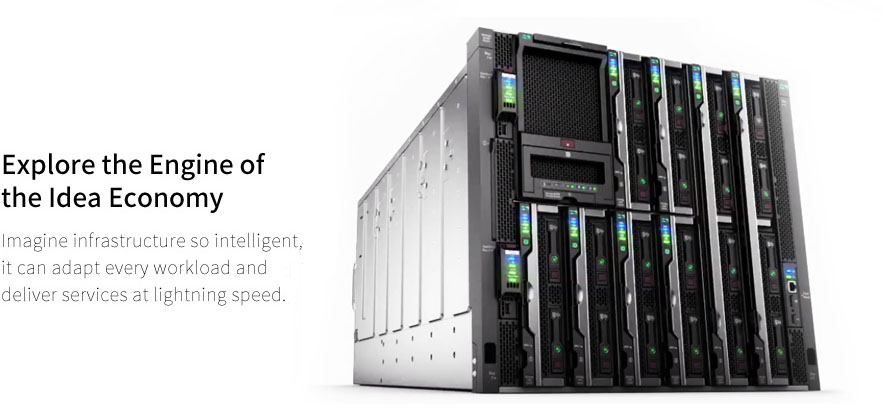
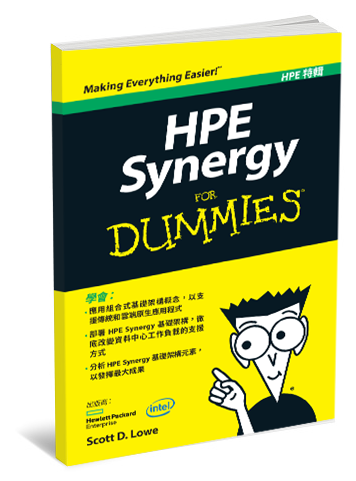

Synergy

HPE Synergy 透過單一介面，可將實體和虛擬運算、儲存、光纖集區等，整合進入任何應用程式的
所有配置。可延伸的平台，能輕鬆運用各種應用程式與營運模式，例如虛擬化、混合雲端和開發營運 (DevOps)。HPE Synergy 是第一個專為 Composable Infrastructure
（編製型基礎架構）打造的平台，可為全新種類應用程式推動創新和價值創造，同時更有效率地執行傳統工作負載，例如：
混合式雲端基礎架構
結合硬體基礎架構、軟體和服務，以提供客戶在雲端奠定基礎的單一平台。
應用程式開發
於專案的設計、開發和整合階段期間，針對每個開發人員，分配和取消佈建運算、儲存和網路資源。
資料管理
整合即時企業通訊服務，該服務可在多個裝置提供一致的統一使用者介面 和體驗。
IT 基礎架構
針對傳統業務應用程式，例如系統和網路管理、資料檔案傳輸、VDI 以及安全系統，分配和取消佈建運算、儲存與網路資源。
利用 HPE Synergy 建立 Composable Infrastructure 的 五個步驟：
第一步：HPE Synergy Frame
HPE Synergy Frame可接受多世代運算、儲存、光纖和管理模組。
電源與散熱
電源與散熱
HPE Synergy 12000 Frame 整合最多六個 96 % Titanium 效率 2650 W 200–240 V ac
的
電源供應器。這能為您的 HPE Synergy Frame 提供最高 15,900 的總瓦數。設為電
源線路備援 (N+N) 時，系統會在機架線路降壓的每個階段，維持 7950
W。設為
電源線路備援 (N+1) 時，架構則有 13,250 W 可供使用。
整合式管理
集結儲存模組，包括完全整合的內部儲存模組、直連和完全協調SAN
儲存、軟體定義儲存、雙插槽和四插槽運算模組，以及多種符合廣泛工作負載要求的備援光纖模組。客戶可輕鬆部署所需的整個基礎架構，以執行應用程式和儲存其資料。
HPE Synergy Frame
可輕鬆安裝進現有機架並插入資料中心資源，在幾分鐘內上線運作。可輕鬆插入運算、儲存和光纖模組並自動探索。若模組為正確插入，或迅速且自動偵測到硬體配置錯誤，則會提供解決問題的指南。
整合式軟體定義智慧技術，可進行自我探索、自我組裝、自我保護、自我協調、自我診斷等功能。內建範本可在單一步驟內，進行設定、佈建，並且完成更新等運作。可針對持續的應用程式可用性，快速並自動執行變更。
第二步：選配的 Synergy Image Streamer 管理設備
在 HPE Synergy Frame 下，Synergy 的 HPE Image Streamer
可為您的黃金映像檔維持實體的設備儲存庫。此類黃金映像檔可快速複製，為運算模組建立唯一的 開機映像檔。如此就能確保 HPE Synergy
迅速部署新的運算模組或更新現有模組。這遠比建立伺服器的傳統循序流程快上許多，即先行實體佈建，接著安裝作業系統 (OS)、虛擬機器管理程序、I/O 驅動程式、應用程式堆疊等。管理員 運用 HPE Image
Streamer 即可設計運算模組的開機映像檔，配合作業系統和應用程式堆疊，打造隨時可用的環境。
第三步：選擇您的 HPE Synergy Compute

Making Everything Easier! HPE特輯
HPE Synergy FOR DUMMIES
學會:
- 應用組合式基礎架構概念，以支援傳統和雲端原生應用程式
- 部署 HPE Synergy 基礎架構，徹底改變資料中心工作負載的支援方式
- 分析 HPE Synergy 基礎架構元素，以發揮最大成果
下載HPE特輯